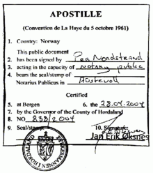
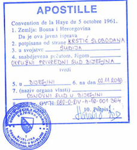
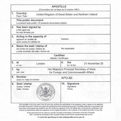

Mijn naam is Natalya Novak. Ik ben voltijds beëdigd vertaler-tolk (wat is dit?) Nederlands–Russisch. Dankzij mijn diploma gerechtswetenschappen heb ik een goede kennis van de correcte juridische terminologie. Bovendien heb ik het certificaat van gerechtsvertaler en -tolk, waardoor documenten hun juridische waarde behouden. Door het beroepsgeheim blijft de inhoud van uw documenten beschermd.
Enkele weetjes over mijn achtergrond:
Ik werk vlot met moderne media (Skype, WhatsApp, Viber...); tolken en vertalingen kunnen dus ook op afstand. Ik ben makkelijk bereikbaar (contactpagina), voor dringende opdrachten ook 's nachts op het nummer 0032 123 45 67 89.
Communicatie, betrouwbaarheid en transparantie zijn belangrijk. Daarom bied ik deze vier garanties:
Mylene Wouters:
"Ik ben 100 procent content. Super professioneel, snelle vertaling, en de prijs is echt goedkoop."
Dimitry Sokolov
"Спасибо за хороший и быстрый перевод! Всем советую!"
Voor vertalingen van documenten die in het buitenland geldig moeten zijn, is soms een apostillestempel vereist. Het wordt geplaatst in het land dat het document uitgeeft.
voorbeelden van apostilles
Mosterdstraat 117 2100 Antwerpen (België)
©2018, Natalya Novak